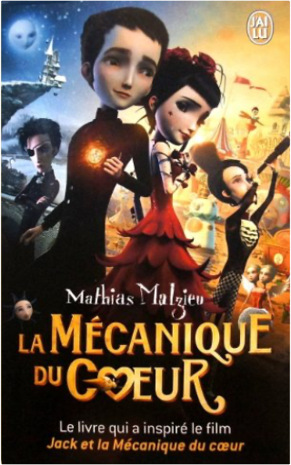
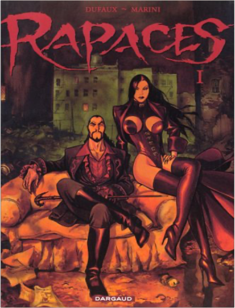
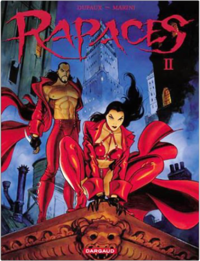

je suis en cp, tome 3 : jour de piscinemagdalena, emmanuel ristord je suis en cp, tome 3 : jour de piscinemagdalena, emmanuel ristord  Titre: Je suis en CP, Tome 3 : Jour de piscine la mécanique du coeurmathias malzieu Édimbourg, 1874. Jack naît le jour le plus froid du monde et son cÅ“ur en reste gelé. Mi-sorcière mi-chaman, la sage-femme qui aide à l'accouchement parvient à sauver le nourrisson en remplaçant le cÅ“ur défectueux par une horloge. Cette prothèse fonctionne et Jack vivra, à condition d'éviter toute charge émotionnelle : pas de colère donc, et surtout, surtout, pas d'état amoureux. Mais le regard de braise d'une petite chanteuse de rue mettra le cÅ“ur de fortune de notre héros à rude épreuve : prêt à tout pour la retrouver, Jack se lance tel Don Quichotte dans une quête amoureuse qui le mènera des lochs écossais jusqu'aux arcades de Grenade et lui fera connaître les délices de l'amour comme sa cruauté. Conte désuéto-moderne mâtiné de western-spaghetti, La Mécanique du CÅ“ur vibre d'une rugueuse force poétique où l'humour est toujours présent. Mathias Malzieu soumet aux grands enfants que nous sommes une réflexion très personnelle sur la passion amoureuse et le rejet de la différence, donnant naissance à un petit frère de Pinocchio qui aurait fait un tour chez les Freaks de Todd Browning. rapaces, tome 1enrico marini, jean dufaux Aux temps ancestraux de L'Inquisition, un peuple d'immortels malfaisants décide de modifier le cours de son destin. De prédateurs assoiffés de sang, ils deviennent tyrans avides de pouvoir. Ils troquent du même coup l'ombre pour la lumière et viennent exercer leur puissance maléfique sur les simples mortels jusqu'au jour où le premier signe de dégénérescence apparaît. C'est le moment choisi par les Rapaces, couple de fauves sanguinaires, pour sortir de l'ombre... rapaces, tome 2enrico marini, jean dufaux Aux temps ancestraux de L'Inquisition, un peuple d'immortels malfaisants décide de modifier le cours de son destin. De prédateurs assoiffés de sang, ils deviennent tyrans avides de pouvoir. Ils troquent du même coup l'ombre pour la lumière et viennent exercer leur puissance maléfique sur les simples mortels jusqu'au jour où le premier signe de dégénérescence apparaît. C'est le moment choisi par les Rapaces, couple de fauves sanguinaires, pour sortir de l'ombre... |


 Made with Delicious Library
Made with Delicious LibraryNancy, State zipflap congrotus delicious library Thomas, Julien